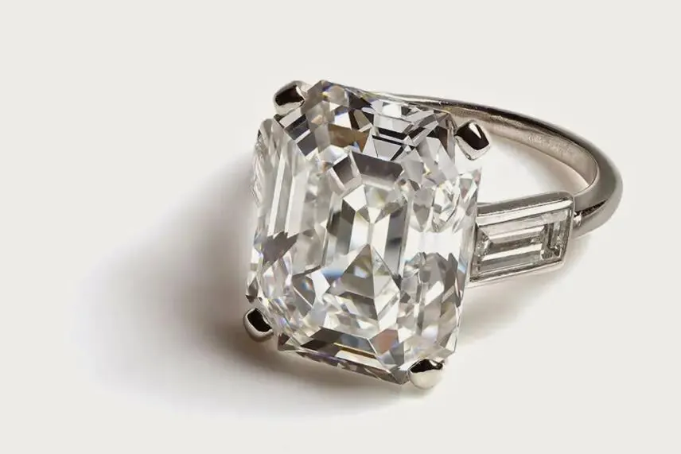
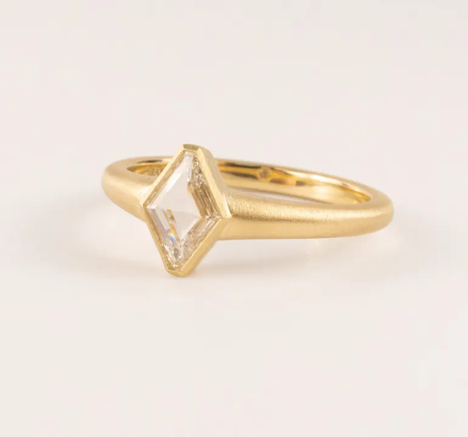

硬度不等於堅韌：一錘能敲碎的鑽石
鑽石硬到能刻劃任何東西，卻脆到怕敲——「硬」和「耐摔」是兩回事，這是鑽石最被誤解的物理。


核心定義
「硬度」（hardness）指抵抗刻劃的能力，「韌性」（toughness）指抵抗破裂的能力——兩者是完全不同的物理量。鑽石的硬度是摩氏 10，最硬；但韌性只屬中下等級，因為它存在「解理面」：沿著特定晶面方向，鑽石其實很容易劈裂。
這意味著：用鑽石劃玻璃（靠硬度）它毫髮無傷，但拿榔頭沿解理方向敲它，它會應聲碎裂。江湖上「鑽石無堅不摧」的印象，是對「硬度」的過度翻譯。
特徵與分類
| 性質 | 鑽石表現 | 日常影響 |
|---|---|---|
| 硬度 | 摩氏 10（最硬） | 不怕刮、可刻玻璃 |
| 韌性 | 中下 | 怕敲、怕摔、怕撞擊 |
| 脆性 | 高 | 邊角碰撞可能崩裂 |
| 解理 | 四組完全解理 | 沿晶面方向易劈裂 |
| 耐熱 | 約 700°C 以上開始變化 | 高溫焊接要小心 |
鑽石的四組「完全解理」沿八面體方向分布，是切割工藝的基礎——工匠正是順著解理方向劈開原石。但這也代表：若戒指上的鑽石在解理方向受到撞擊，裂痕可能沿整顆鑽石蔓延。
科學原理
硬度的來源是碳的強共價鍵：每個碳原子與四個鄰近碳原子以四面體鍵結，形成極堅固的三維網狀結構，讓它難以被劃傷。但這套強鍵結構同時是「剛性」的：沒有「彈性」吸收衝擊，力一來就沿鍵最弱的解理面斷裂——這就是「又硬又脆」的物理根源。
耐熱性方面，鑽石在空氣中約 700°C 開始氧化（表面燒蝕），在惰性氣體中可承受更高溫。珠寶維修時的焊接火焰、雷射刻字若操作不當，都可能讓鑽石表面「燒白」。
鑑定與鑑別方法
- 檢查腰圍與尖底有無「羽裂」與「胡須狀」崩邊
- 用放大鏡看刻面稜線有無碰撞缺口（nicks）
- 注意檯面邊緣的「起泡」狀凹坑——可能是焊接高溫傷害
- 不要用超音波清洗有明顯裂紋的鑽石（裂紋可能擴大）
- 任何「表面白霧」要檢查是否為高溫燒蝕
市場行情與保養建議
鑽石的保養鐵律：單獨存放（避免互相碰撞）、戴著做家事與運動要小心（碰撞與化學品）、定期檢查鑲爪（鬆動時鑽石最容易掉）、遠離高溫焊接環境。日常使用中，「怕撞」比「怕刮」更需要警惕。
市場上，邊角崩裂（chipped）的鑽石價值會明顯受損——修磨掉傷痕等於損失重量。一顆保養得宜的鑽石，價值才守得住。
常見誤區
錯。鑽石怕撞擊、怕高溫、怕解理方向受力。鑽石工匠能「劈」開它，正是利用它的脆弱面。
拿鑽石刻劃玻璃或金屬，可能讓鑽石本身崩邊或刮傷自己（對，硬物互刮，硬的不一定贏）。鑑定硬度是實驗室的事，別拿你的鑽石做實驗。
冷知識
傳統鑽石切磨先沿解理面劈開原石，或順著解理方向鋸切。解理是鑽石最脆弱的線，也是工匠最鋒利的工具。
維修焊接時的高溫會讓鑽石表面氧化發白。珠寶匠修理戒指時，都會先把鑽石拆下來或用保護膏包住。
反直覺觀點
硬度抗刮、韌性抗摔，鑽石兩者失衡——這不是矛盾，是物理。懂得這個道理，你才會在戴著鑽石打排球之前，先把它摘下來。
兩顆鑽石放在同一個袋裡互撞，可能互相刮傷、崩邊。珠寶盒裡的鑽石，必須一顆一隔——「最硬」遇上「最硬」，結局往往是兩敗俱傷。